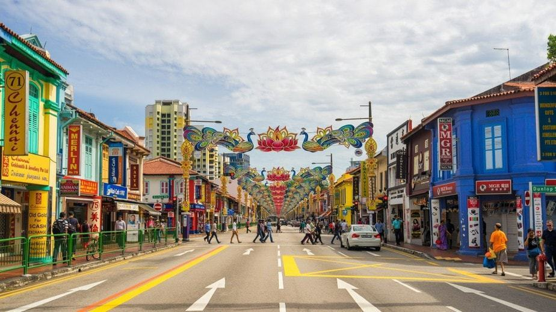
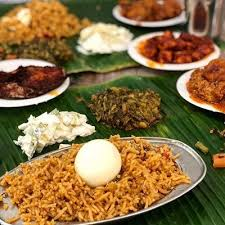
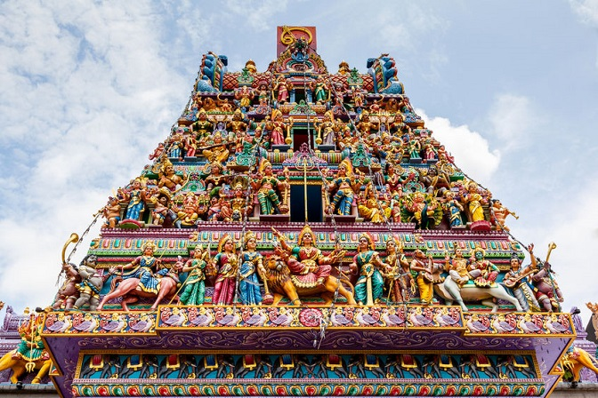
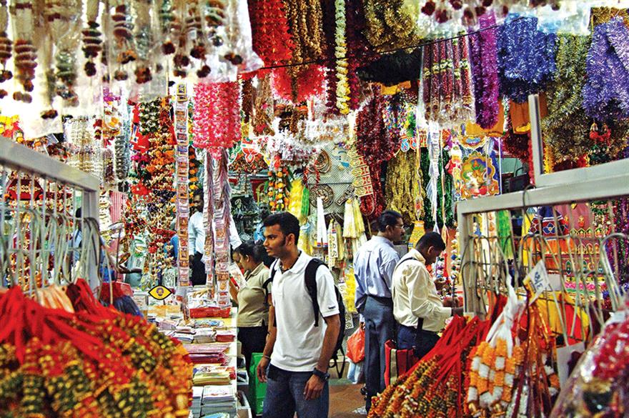
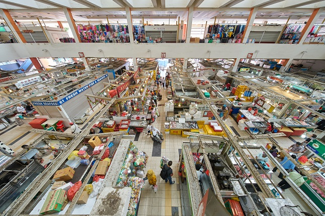
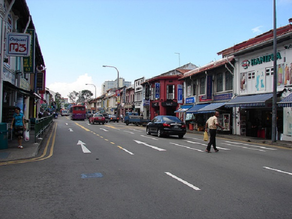
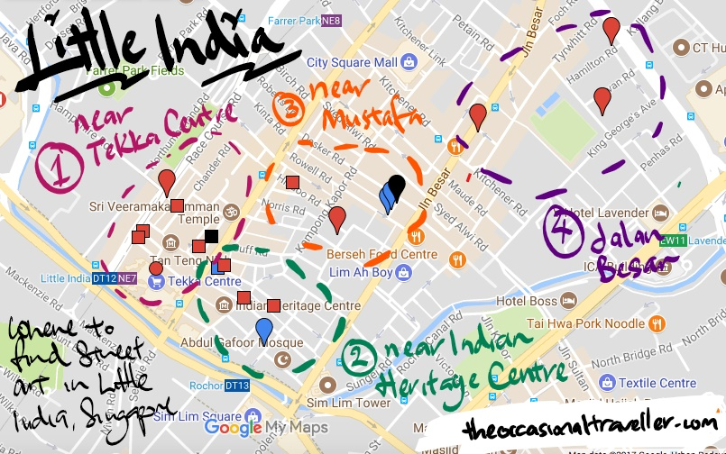

The sound of temple bells,
   the sight of vibrant colours across the shops,
the smell of fragrant spices that fill the air,
the touch of silky soft clothings,
the taste of strong delicacies.
This historic district is filled with cultural practices that ignite your 5 senses once you step foot into the festive street.
Must Experience!
Landmarks
~Sri Veeramakaliamman Temple; situated in the heart of Little India, it is one of Singapore's oldest Hindu Temples.
Head in to view some of the most intricate structures and designs in a peaceful setting!
~Tekka Centre; a multi-use building complex holding Singapore's largest indoor wet market!
Food
~Race Course Road; a whole street for foodies to go crazy!
 ~Banana Leaf Apolo; reknowned for their South Indian Food.
Reviews highly suggest the Fish Head Curry sold by this shop!
Shop
~Mustafa Centre; huge department store open 24/7 with everything you need.
Ranging from jewelleries to electronics, get some of the cheapest goods here!
~Little India Arcade; an indoor market in a 1920s building.
Step in to experience small traders selling their cultural products from local snacks all the way to their traditional costumes!
How to get here?
Nearest MRT: Farrer Park (North-East Line) /
Little India (North-East & Downtown Line) / Rochor (Downtown Line)
Buses: 23,48,56,57,64,65,66,131,139,147,166,170
